En cualquier experimento, la variabilidad que surge de un factor puede afectar los resultados, pero cuando este factor no es de interés o no hace parte del tratamiento a evaluar se le considera como factor perturbador. Por lo general este tipo de factores son desconocidos y no controlables, a través de la aleatorización se puede controlar en gran medida los efectos de estos factores sobre la variable respuesta.
Existen casos en que estos factores son conocidos y se pueden controlar, no obstante, no son de interés para el comportamiento de la variable respuesta. Por ejemplo, si se quiere probar un tratamiento para un producto que es fabricado por cuatro máquinas, cada una de estas es operada por una persona distinta.
Operadores
El interés aquí es ver cómo el tratamiento influye sobre la respuesta de las máquinas, no obstante, el efecto que puede hacer el operador puede influir en la variabilidad del resultado. Para controlar esta variabilidad se trata al efecto del operador como un bloque, es decir, un factor adicional que no es de interés pero que afecta los resultados. Para controlar la variabilidad del bloque lo que generalmente se hace es aleatorizar el diseño incluyendo el nuevo factor, así cada operador manipula cada máquina.
Bloques
De esta manera se elimina sistemáticamente el efecto del bloque sobre las comparaciones estadísticas entre los tratamientos. Este nuevo “factor” se incluye en el ANOVA, si resulta significativa implica que el factor de bloques tiene influencia sobre la variable de respuesta, y debe ser tomado en cuenta para mejorar la calidad de ésta. Pero, si no se rechaza y se acepta que los bloques son iguales en respuesta media, entonces se tiene el argumento a favor de no controlar este factor en futuros experimentos sobre esta misma respuesta, además de que su influencia en la calidad de la respuesta no es significativa.
Para aplicar los bloques en un diseño factorial, se recomienda utilizar los diseños por bloques completamente aleatorizados (DBCA). Cuando se utiliza este diseño, el experimentador piensa que cada medición será el resultado del efecto del tratamiento donde se encuentre, del efecto del bloque al que pertenece y de cierto error que se espera sea aleatorio. El modelo estadístico para este diseño está dado por:
\[Y_{ij}=\mu+\tau_i+\gamma_j+\varepsilon_{ij}\\i=1,2,\dots,k \quad j=1,2,\dots,b\]
Donde \(Y_{ij}\) es la medición que corresponde al tratamiento \(i\) y al bloque \(j\), \(\mu\) es la media global poblacional, \(\tau_i\) es el efecto del tratamiento \(i\), \(\gamma_j\) es el efecto del bloque \(j\) y \(\varepsilon_{ij}\) es el error aleatorio atribuible a la medición \(Y_{ij}\), donde
\[\varepsilon_{ij}\sim NID(0,\sigma^2)\]
Para este diseño las hipótesis a probar son:
\[H_0: \mu_1=\mu_2=\dots=\mu_k=\mu\\ H_a: \mu_i \neq \mu_j \quad \text{para algun} i\neq j\]
O en términos de de los tratamientos:
\[H_0: \tau_1=\tau_2=\dots=\tau_k=0\\ H_a: \tau_i \neq 0 \quad \text{para algun}\,\, i\]
En cuanto a las hipótesis de para los bloques se plantea:
\[H_0: \gamma_1=\gamma_2=\dots=\gamma_b = 0\\ H_a: \gamma_j \neq 0 \quad \text{para algun bloque} \,\, j\]
Las hipótesis se prueban a través del Análisis de Varianza (ANOVA) con dos criterios de clasificación ya que se controlan dos fuentes de variación: los tratamientos y los bloques.
| Fuente de Variación | SS | gl | MS | F | valor-p |
|---|---|---|---|---|---|
| Tratamientos | \(SSB=\sum_{i=1}^{k}\frac{Y^2_i.}{b}-\frac{Y^2_{..}}{N}\) | \(k-1\) | \(MSB=\frac{SSB}{k-1}\) | \(F_0=\frac{MSB}{MSE}\) | \(P(F>F_0)\) |
| Bloques | \(SS\gamma=\sum_{j=1}^b \frac{Y^2_{.j}}{k}-\frac{Y^2..}{N}\) | \(b-1\) | \(MS\gamma=\frac{SS\gamma}{b-1}\) | \(F_0=\frac{MS\gamma}{MSE}\) | \(P(F>F_0)\) |
| Error | \(SSE=SST-SSB-SS\gamma\) | \((k-1)(b-1)\) | \(MSE=\frac{SSE}{(k-1)(b-1)}\) | ||
| Total | \(SST=\sum_{j=1}^b\sum_{i=i}^{k} Y^2_{ij}-\frac{Y^2_{..}}{N}\) | \(N-1\) |
Una vez se construye la tabla de ANOVA se verifican los supuestos del modelos a través de los residuales o errores aleatorios, similar a los diseños de un solo factor, entonces hay que comprobar:
Con los supuestos del modelos validados, se procede a realizar las pruebas post-hoc si se desea inferir sobre los niveles de los tratamientos del modelo. Se pueden utilizar los métodos:
Un equipo de mejora investiga el efecto de cuatro métodos de ensamble A, B, C y D, sobre el tiempo de ensamble en minutos. En primera instancia, la estrategia experimental es aplicar cuatro veces los cuatro métodos de ensamble en orden completamente aleatorio (las 16 pruebas en orden aleatorio). Cada método de ensamble es llevado a cabo por cuatro operadores, y se pretende controlar este factor mediante un bloque, entonces se plantea un diseño por bloque completemanete al azar (DBCA), donde cada operario aplicará cada método de ensamble, se supone que, además del método de ensamble y el bloque, no existe ningún otro factor que influya de manera significativa sobre la variable de respuesta (tiempo de ensamble). Los tiempos de ensamble obtenidos son:
| Método | Operador | |||
|---|---|---|---|---|
| 1 | 2 | 3 | 4 | |
| A | 6 | 9 | 7 | 8 |
| B | 7 | 10 | 11 | 18 |
| C | 10 | 16 | 11 | 14 |
| D | 10 | 13 | 11 | 9 |
El modelo a evaluar es:
\[y_{ij}=\mu+\tau_i+\gamma_j+\varepsilon_{ij}\qquad \varepsilon_{ij}\sim N(0,\sigma^2)\]
Utilizando R el análisis estadístico de este diseño
experimental es sencillo. Los pasos a seguir son los siguientes:
Necesitamos las siguientes librerías.
# Para gráficos con estilo
require(ggplot2)
# Para manejar bases de datos
require(dplyr)
# Para construir los qq-plots
require(car)
# Para las pruebas de normalidad
require(nortest)
# Para las pruebas post-hoc
require(agricolae)
require(multcomp)El primer paso es cargar o construir la base de datos, esto puede
hacerse en excel y luego importarlas a R o se puede
construir la base de datos de la siguiente forma:
datos <- data.frame(respuesta=c(6,9,7,8,
7,10,11,8,
10,16,11,14,
10,13,11,9),
tratamientos=rep(LETTERS[1:4],each=4),
bloques=factor(rep(1:4,4)),
stringsAsFactors = T)
# verificar la tabla de datos
xtabs(respuesta~tratamientos+bloques,data=datos)## bloques
## tratamientos 1 2 3 4
## A 6 9 7 8
## B 7 10 11 8
## C 10 16 11 14
## D 10 13 11 9str(datos)## 'data.frame': 16 obs. of 3 variables:
## $ respuesta : num 6 9 7 8 7 10 11 8 10 16 ...
## $ tratamientos: Factor w/ 4 levels "A","B","C","D": 1 1 1 1 2 2 2 2 3 3 ...
## $ bloques : Factor w/ 4 levels "1","2","3","4": 1 2 3 4 1 2 3 4 1 2 ...Los análisis descriptivos sirven para evaluar visualmente si existe un posible efecto del tratamiento en la variable respuesta, como no tenemos réplicas entonces la mejor opción es graficar los puntos y lineas que corresponden a los tratamientos con cada bloque.
ggplot(datos,aes(y=respuesta,x=bloques,colour=tratamientos))+
geom_line(aes(group=tratamientos),lwd=1)+
geom_point(aes(group=tratamientos),size=2,pch=16)+theme_bw()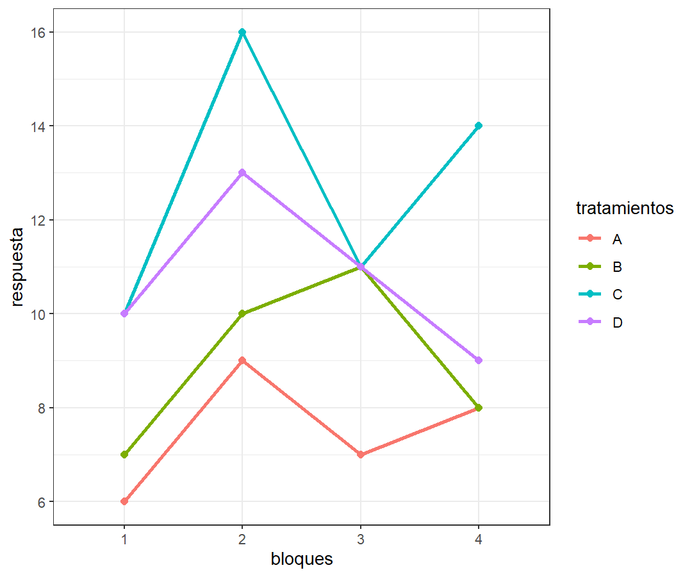
ggplot(datos,aes(y=respuesta,x=tratamientos,colour=factor(bloques)))+
geom_line(aes(group=bloques),lwd=1)+
geom_point(aes(group=bloques),size=2,pch=16)+theme_bw()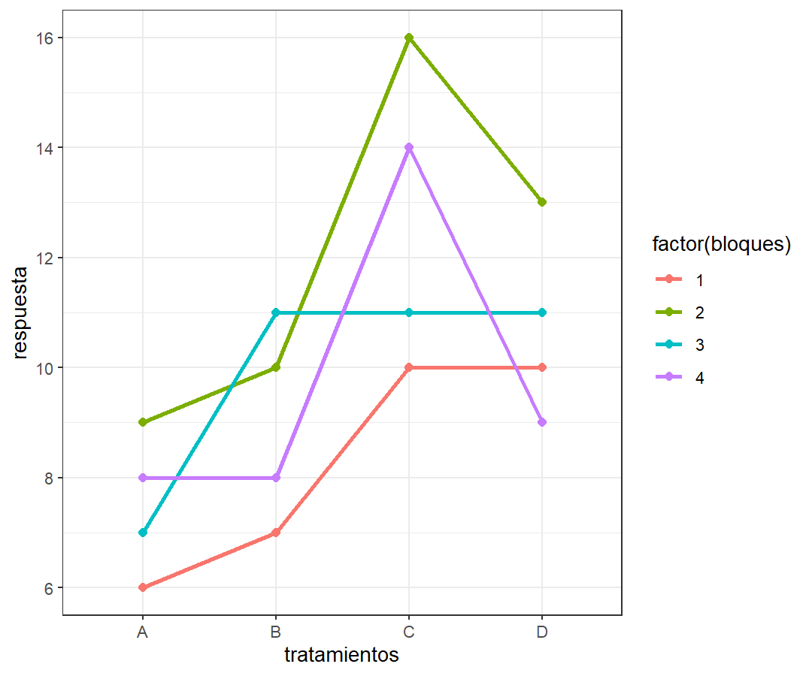
ggplot(datos,aes(x=1:16,y=sort(bloques),colour=tratamientos))+
geom_line(aes(group=tratamientos),lwd=1)+
geom_point(aes(group=tratamientos),size=2,pch=16)+theme_bw()+
ylab("Bloques")+xlab("")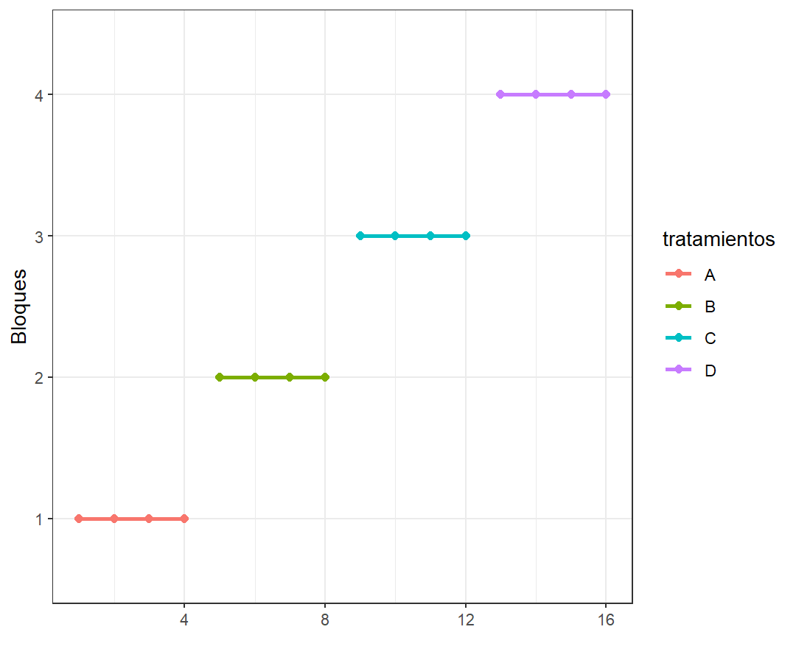
Luego se construye el modelo con el comando aov dando
como argumentos la fórmula, después se ejecuta el comando
anova para construir la tabla e interpretar.
# Anova
fit <- aov(respuesta~tratamientos+bloques,data=datos)
anova(fit)## Analysis of Variance Table
##
## Response: respuesta
## Df Sum Sq Mean Sq F value Pr(>F)
## tratamientos 3 61.5 20.5 10.25 0.002919 **
## bloques 3 28.5 9.5 4.75 0.029846 *
## Residuals 9 18.0 2.0
## ---
## Signif. codes: 0 '***' 0.001 '**' 0.01 '*' 0.05 '.' 0.1 ' ' 1Como el modelo es significativo tanto para los tratamientos y los bloques, se sugiere que el efecto que ejerce el operario es significativo en el tiempo de ensambe. Es necesario validar los supuestos del modelo antes de realizar las pruebas post-hoc y concluir más allá.
# normalidad
qqPlot(fit$residuals,pch=19,main="Normal Q-Q Plot",las=1)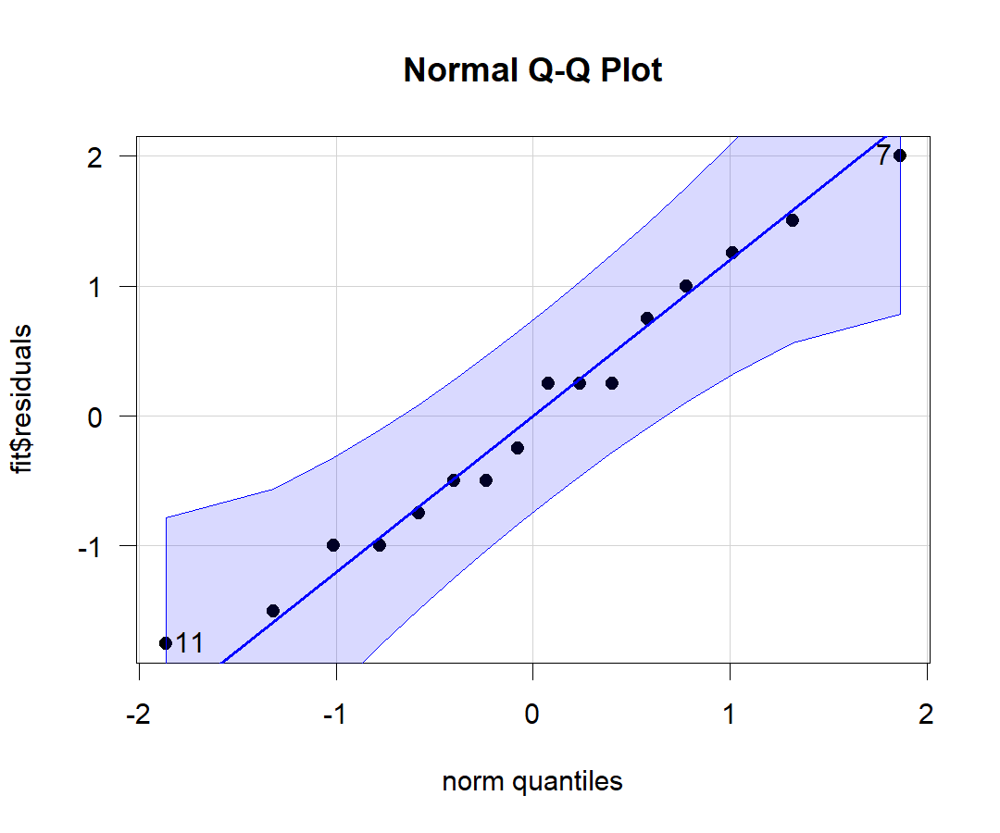
## [1] 7 11shapiro.test(fit$residuals)##
## Shapiro-Wilk normality test
##
## data: fit$residuals
## W = 0.97299, p-value = 0.8844ad.test(fit$residuals)##
## Anderson-Darling normality test
##
## data: fit$residuals
## A = 0.1884, p-value = 0.8859lillie.test(fit$residuals)##
## Lilliefors (Kolmogorov-Smirnov) normality test
##
## data: fit$residuals
## D = 0.11346, p-value = 0.8412Se cumple el supuesto de normalidad dado que no se rechaza la hipótesis nula.
# independecia
plot(fit$residuals,pch=19,las=1,type="b",
main="Independencia")
abline(h=0,lty=2,col=2)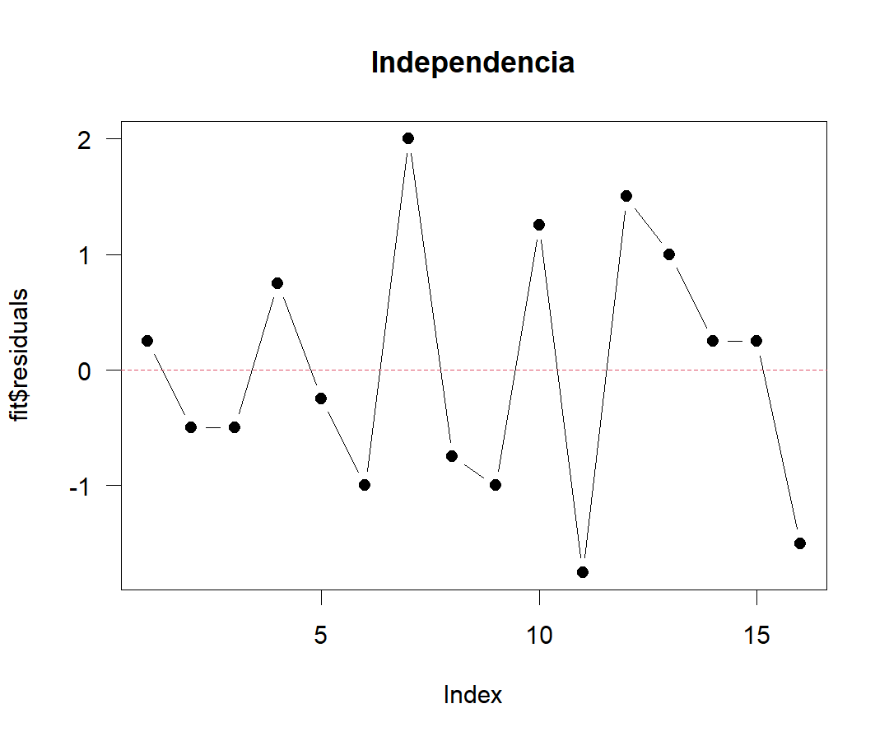
durbinWatsonTest(fit)## lag Autocorrelation D-W Statistic p-value
## 1 -0.4201389 2.711806 0.538
## Alternative hypothesis: rho != 0Se cumple el supuesto de independencia ya que no se halla autocorrelación en los errores del modelo.
# Homocedasticidad
plot(predict(fit),fit$residuals,pch=19,las=1,
main="Homogeneidad de Varianza",
xlab="Valores Predictivos",ylab="Residuales")
abline(h=0,lty=2,col=2)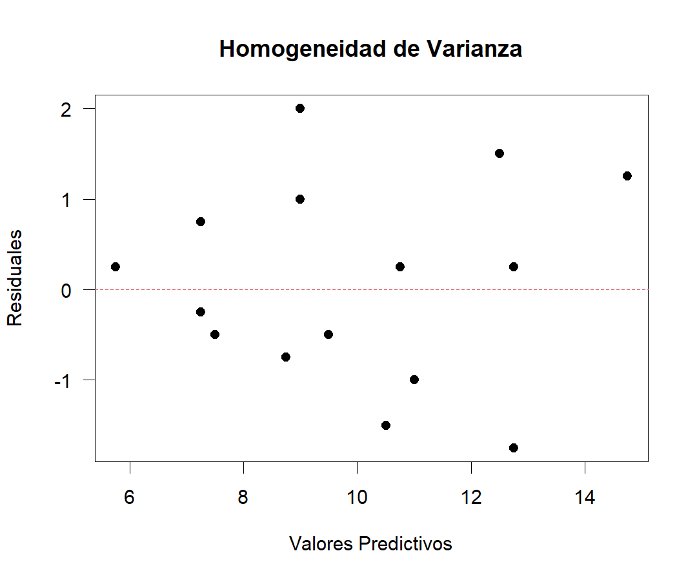
bartlett.test(fit$residuals,datos$tratamientos)##
## Bartlett test of homogeneity of variances
##
## data: fit$residuals and datos$tratamientos
## Bartlett's K-squared = 2.3476, df = 3, p-value = 0.5035bartlett.test(fit$residuals,datos$bloques)##
## Bartlett test of homogeneity of variances
##
## data: fit$residuals and datos$bloques
## Bartlett's K-squared = 1.2675, df = 3, p-value = 0.7369De acuerdo a los resultados no existe diferencias de varianza entre los tratamientos y entre los bloques, es decir, hay homocedasticidad u homogeneidad de varianzas.
# Supuestos globales
plot(fit,pch=19,las=1)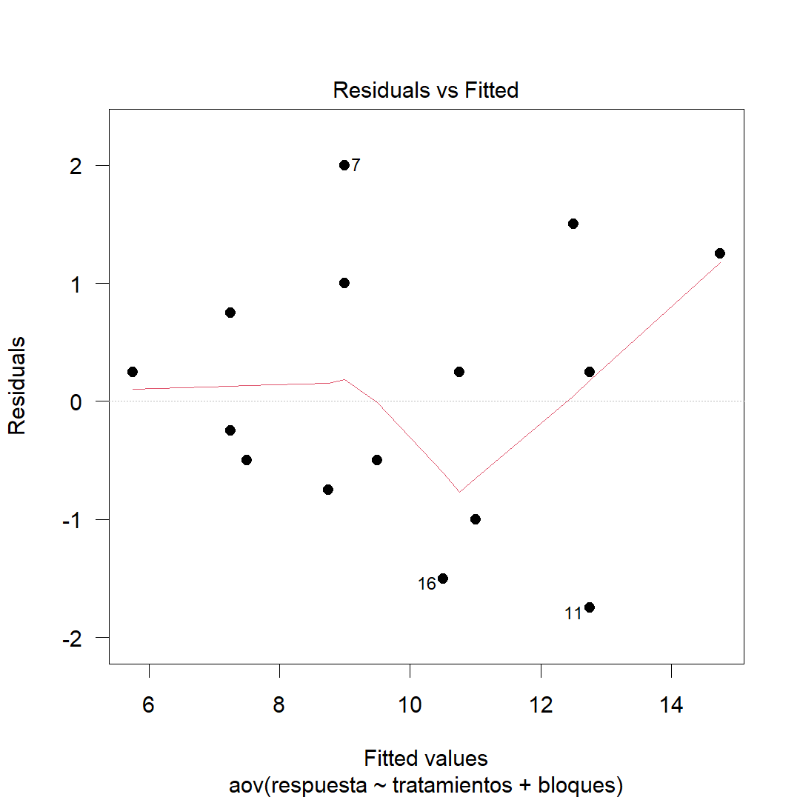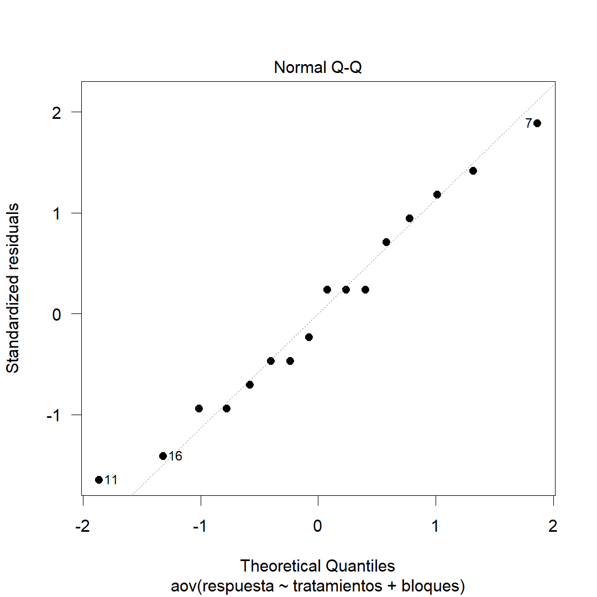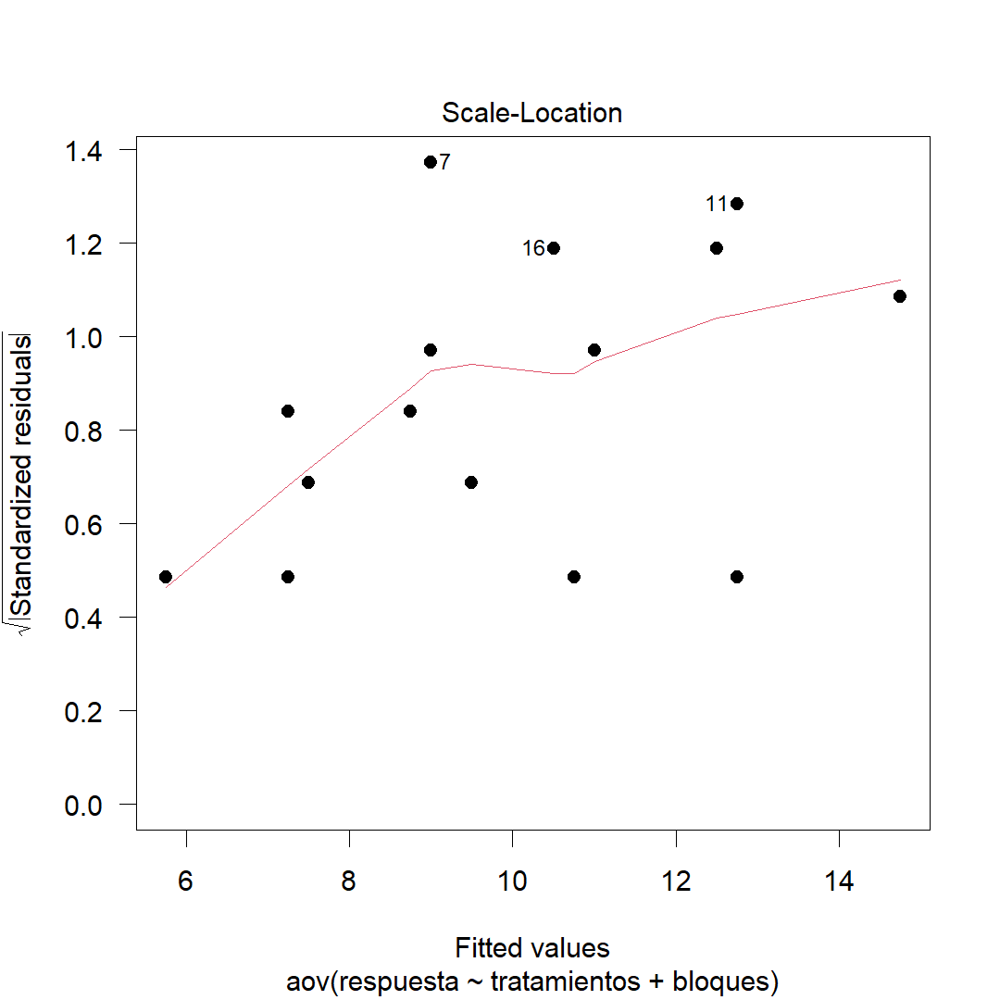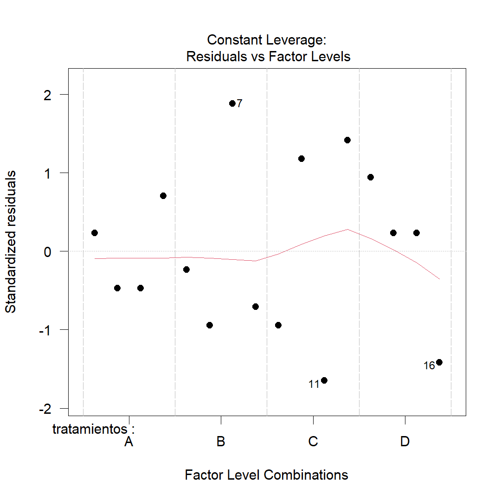
Finalmente, como los supuestos del modelo se cumplen, entonces podemos buscar cuáles son los tratamientos más significativos sobre los tiempos de ensamble mediante las pruebas post-hoc.
#### Pruebas post-hoc ####
lsd <- LSD.test(y = fit,trt = "tratamientos",console = T)##
## Study: fit ~ "tratamientos"
##
## LSD t Test for respuesta
##
## Mean Square Error: 2
##
## tratamientos, means and individual ( 95 %) CI
##
## respuesta std r LCL UCL Min Max
## A 7.50 1.290994 4 5.900413 9.099587 6 9
## B 9.00 1.825742 4 7.400413 10.599587 7 11
## C 12.75 2.753785 4 11.150413 14.349587 10 16
## D 10.75 1.707825 4 9.150413 12.349587 9 13
##
## Alpha: 0.05 ; DF Error: 9
## Critical Value of t: 2.262157
##
## least Significant Difference: 2.262157
##
## Treatments with the same letter are not significantly different.
##
## respuesta groups
## C 12.75 a
## D 10.75 ab
## B 9.00 bc
## A 7.50 cplot(lsd,las=1);grid()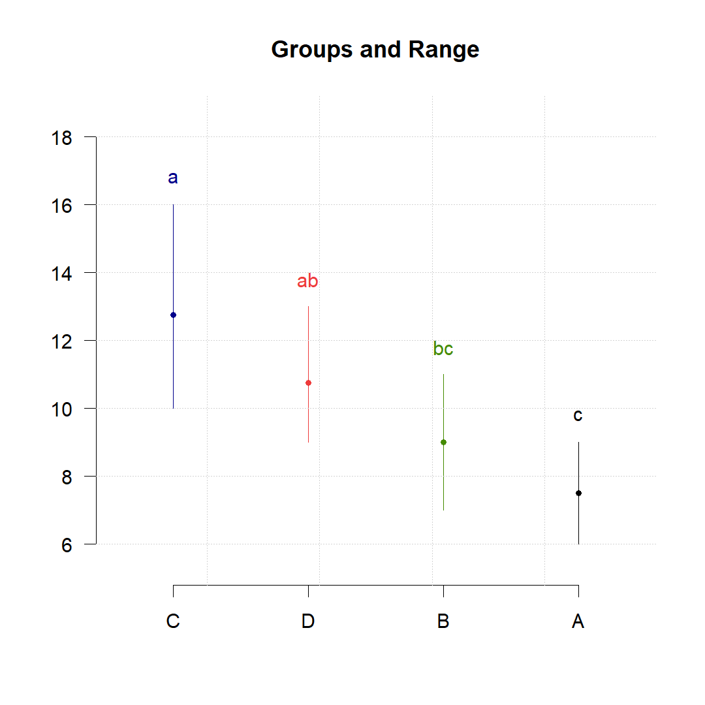
# Tukey HSD
(hsd <- TukeyHSD(fit))## Tukey multiple comparisons of means
## 95% family-wise confidence level
##
## Fit: aov(formula = respuesta ~ tratamientos + bloques, data = datos)
##
## $tratamientos
## diff lwr upr p adj
## B-A 1.50 -1.6217987 4.621799 0.4758801
## C-A 5.25 2.1282013 8.371799 0.0024211
## D-A 3.25 0.1282013 6.371799 0.0412298
## C-B 3.75 0.6282013 6.871799 0.0195634
## D-B 1.75 -1.3717987 4.871799 0.3548246
## D-C -2.00 -5.1217987 1.121799 0.2566550
##
## $bloques
## diff lwr upr p adj
## 2-1 3.75 0.6282013 6.8717987 0.0195634
## 3-1 1.75 -1.3717987 4.8717987 0.3548246
## 4-1 1.50 -1.6217987 4.6217987 0.4758801
## 3-2 -2.00 -5.1217987 1.1217987 0.2566550
## 4-2 -2.25 -5.3717987 0.8717987 0.1815907
## 4-3 -0.25 -3.3717987 2.8717987 0.9941202plot(hsd,las=1)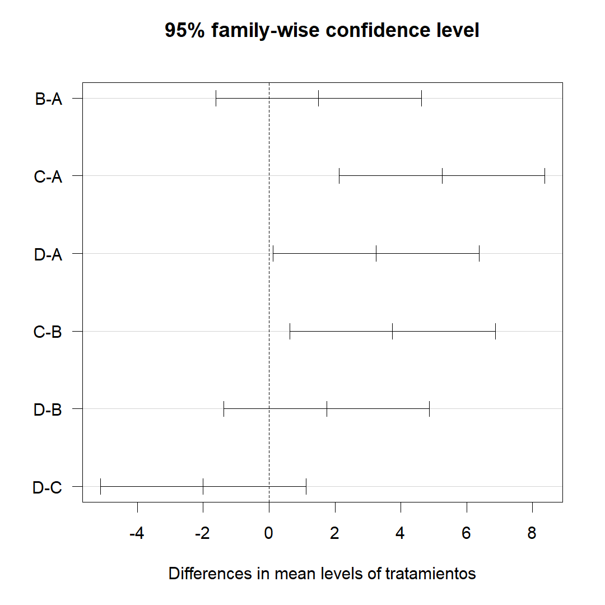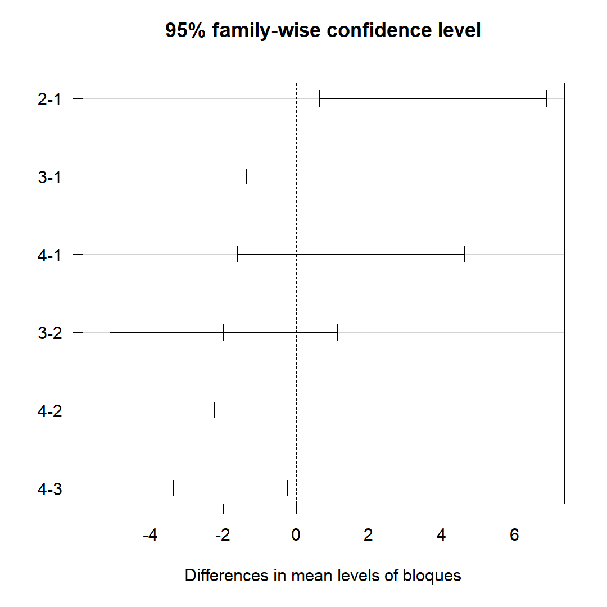
# Duncan
duncan.test(y = fit,trt = "tratamientos",console = T,group = F)##
## Study: fit ~ "tratamientos"
##
## Duncan's new multiple range test
## for respuesta
##
## Mean Square Error: 2
##
## tratamientos, means
##
## respuesta std r Min Max
## A 7.50 1.290994 4 6 9
## B 9.00 1.825742 4 7 11
## C 12.75 2.753785 4 10 16
## D 10.75 1.707825 4 9 13
##
## Comparison between treatments means
##
## difference pvalue signif. LCL UCL
## A - B -1.50 0.1679 -3.7621572 0.7621572
## A - C -5.25 0.0008 *** -7.6681389 -2.8318611
## A - D -3.25 0.0123 * -5.6111269 -0.8888731
## B - C -3.75 0.0057 ** -6.1111269 -1.3888731
## B - D -1.75 0.1140 -4.0121572 0.5121572
## C - D 2.00 0.0766 . -0.2621572 4.2621572duncan.test(y = fit,trt = "bloques",console = T,group = F)##
## Study: fit ~ "bloques"
##
## Duncan's new multiple range test
## for respuesta
##
## Mean Square Error: 2
##
## bloques, means
##
## respuesta std r Min Max
## 1 8.25 2.061553 4 6 10
## 2 12.00 3.162278 4 9 16
## 3 10.00 2.000000 4 7 11
## 4 9.75 2.872281 4 8 14
##
## Comparison between treatments means
##
## difference pvalue signif. LCL UCL
## 1 - 2 -3.75 0.0066 ** -6.1681389 -1.3318611
## 1 - 3 -1.75 0.1282 -4.1111269 0.6111269
## 1 - 4 -1.50 0.1679 -3.7621572 0.7621572
## 2 - 3 2.00 0.0766 . -0.2621572 4.2621572
## 2 - 4 2.25 0.0595 . -0.1111269 4.6111269
## 3 - 4 0.25 0.8082 -2.0121572 2.5121572# Dunnet
Dunnett.tr <- glht(fit,linfct=mcp(tratamientos = "Dunnett"))
summary(Dunnett.tr)##
## Simultaneous Tests for General Linear Hypotheses
##
## Multiple Comparisons of Means: Dunnett Contrasts
##
##
## Fit: aov(formula = respuesta ~ tratamientos + bloques, data = datos)
##
## Linear Hypotheses:
## Estimate Std. Error t value Pr(>|t|)
## B - A == 0 1.50 1.00 1.50 0.35717
## C - A == 0 5.25 1.00 5.25 0.00145 **
## D - A == 0 3.25 1.00 3.25 0.02502 *
## ---
## Signif. codes: 0 '***' 0.001 '**' 0.01 '*' 0.05 '.' 0.1 ' ' 1
## (Adjusted p values reported -- single-step method)plot(Dunnett.tr)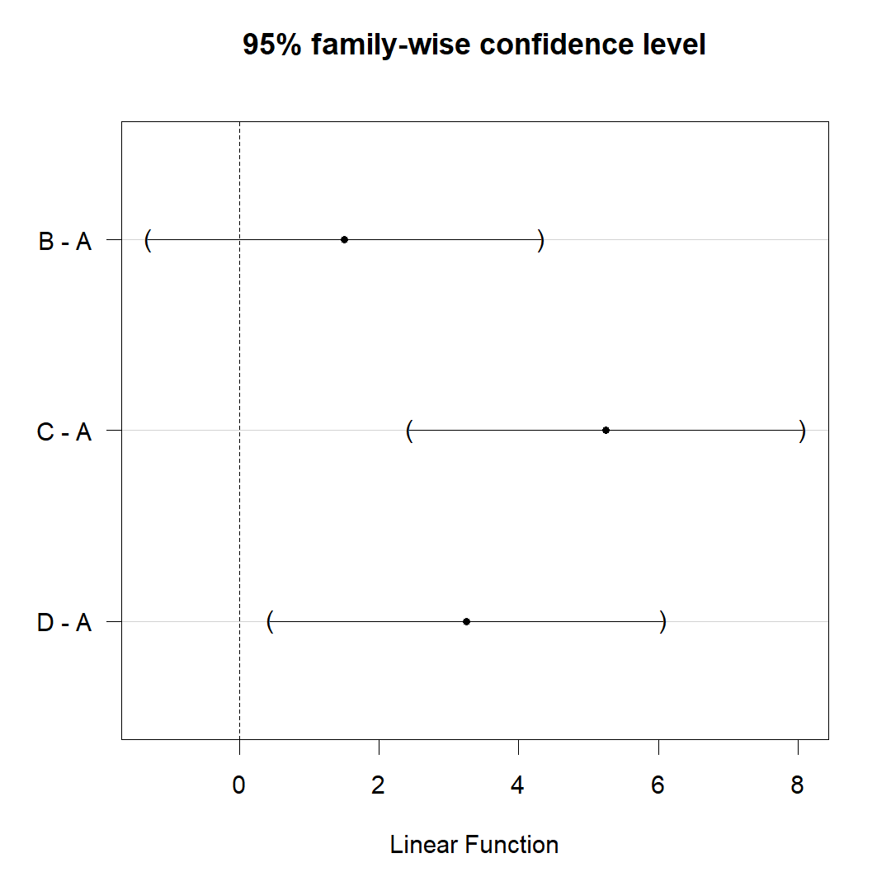
Dunnett.bk <- glht(fit,linfct=mcp('bloques' = "Dunnett"))
summary(Dunnett.bk)##
## Simultaneous Tests for General Linear Hypotheses
##
## Multiple Comparisons of Means: Dunnett Contrasts
##
##
## Fit: aov(formula = respuesta ~ tratamientos + bloques, data = datos)
##
## Linear Hypotheses:
## Estimate Std. Error t value Pr(>|t|)
## 2 - 1 == 0 3.75 1.00 3.75 0.0117 *
## 3 - 1 == 0 1.75 1.00 1.75 0.2534
## 4 - 1 == 0 1.50 1.00 1.50 0.3572
## ---
## Signif. codes: 0 '***' 0.001 '**' 0.01 '*' 0.05 '.' 0.1 ' ' 1
## (Adjusted p values reported -- single-step method)plot(Dunnett.bk)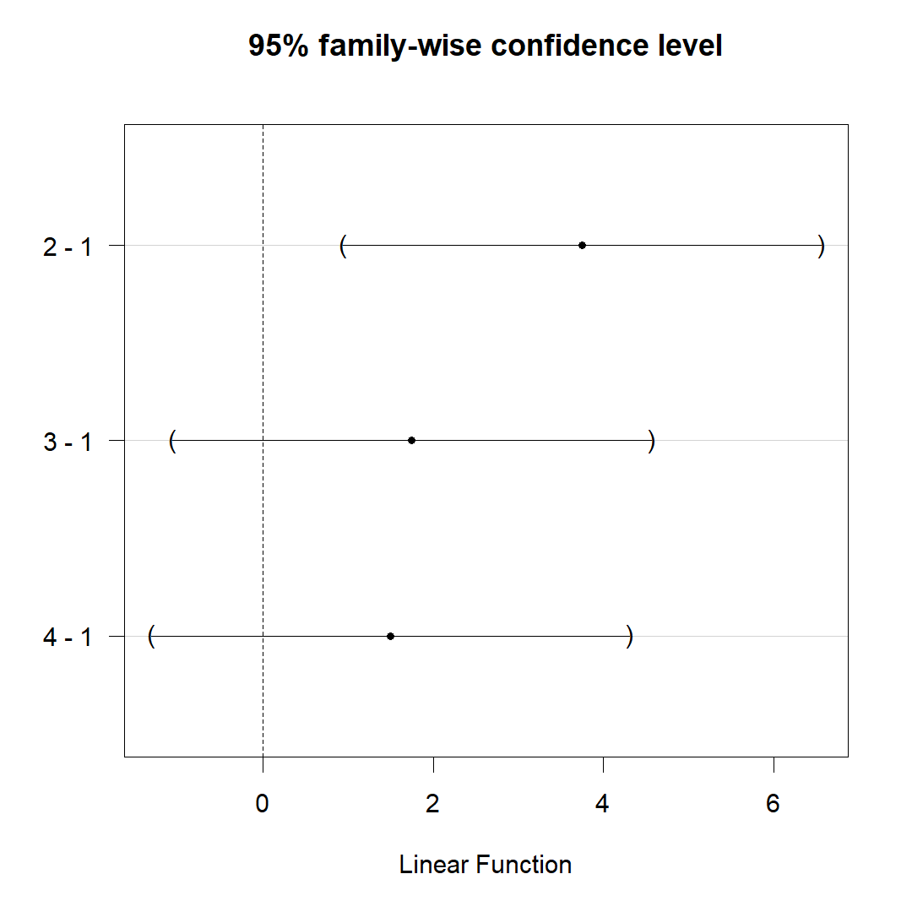
De acuerdo a estos resultados es posible que exista interacción entre
el bloque y los tratamientos, como no se tienen réplicas no podemos
evaluar la interacción directa, no obstante podemos analizar este
fenómeno en el término del error usando la función Error
como argumento del ajuste realizado con aov.
fit_int <- aov(respuesta~tratamientos+
Error(bloques/tratamientos),
data=datos)
summary(fit_int)##
## Error: bloques
## Df Sum Sq Mean Sq F value Pr(>F)
## Residuals 3 28.5 9.5
##
## Error: bloques:tratamientos
## Df Sum Sq Mean Sq F value Pr(>F)
## tratamientos 3 61.5 20.5 10.25 0.00292 **
## Residuals 9 18.0 2.0
## ---
## Signif. codes: 0 '***' 0.001 '**' 0.01 '*' 0.05 '.' 0.1 ' ' 1